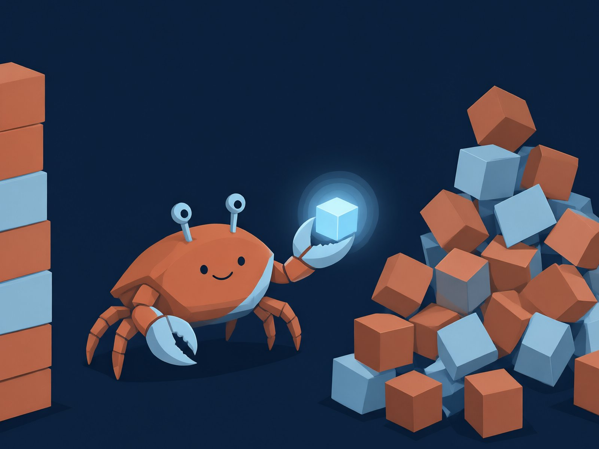

О сайте
Это страница «О сайте» в подкаталоге /about/. Она лежит на один уровень
ниже корня, поэтому все ресурсы подключает относительными путями:
| Ресурс | Правильно из подкаталога | Неправильно |
|---|---|---|
| Стили | ../style.css | /style.css |
| Иконка | ../favicon.svg | /favicon.svg |
| Ссылка на главную | ../index.html | /index.html |
| Картинка | ../image.jpg | /image.jpg |

../image.jpgАбсолютные пути с ведущим слэшем ломаются, когда сайт размещён не в корне домена
(например, в подкаталоге проекта на GitHub Pages), — отсюда правило «всегда ../».